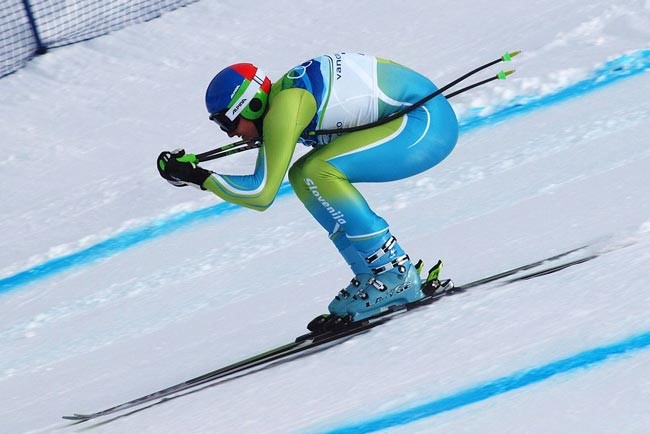
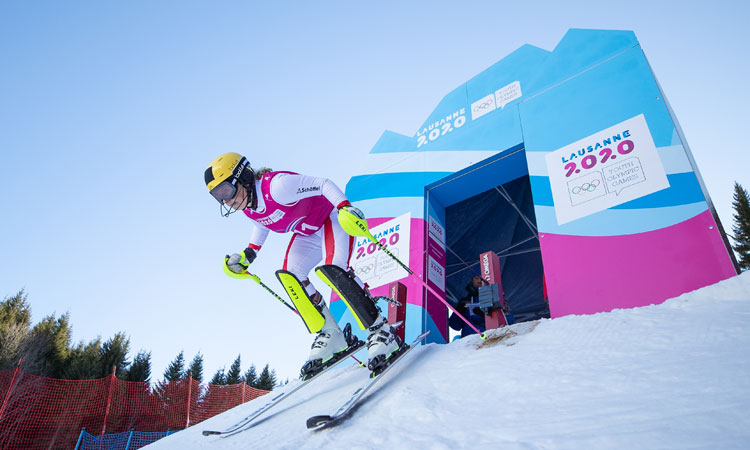
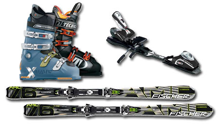

El esquí alpino es una de las modalidades del deporte conocido como esquí. Comenzó a practicarse
en los Alpes, de ahí que reciba este nombre. En las competiciones el objetivo es realizar el descenso en
el menor tiempo posible, siguiendo un trazado sinuoso marcado por unas balizas especiales llamadas puertas.

La competición consta de tres días. En el primero, los participantes examinan la pista y el trazado para
conocer las características generales. El segundo día, los competidores tienen derecho a hacer una bajada de
entrenamiento por el mismo trazado en que se celebrará la competición. El tercer día se celebra la competición
en sí misma. Los tiempos están habitualmente entre un 1:30 (minuto y medio) y 2:30.

El uso del casco es obligatorio. Los esquíes utilizados deben tener una medida mínima de 215 cm para hombres y de
210 cm para mujeres (aunque pueden llegar a medir 225 cm) y con un radio de giro no inferior a 45 m. Estos largos
esquíes se caracterizan también por tener la espátula menos levantada, para ser más aerodinámicos. El incumplimiento
de alguna de estas reglas supone la descalificación del competidor. Además, los palos utilizados son curvados para que
se acoplen mejor al cuerpo cuando se vaya en posición e "huevo", con la que pueden llegar a alcanzar los 140-150 km/hr
(schuss).

| Menú de navegación - pagina 3 | ||
| index | pagina 1 | pagina 2 |